Modular
Mobility
AI 기반 가변형 공공 안전·편의 모빌리티 서비스 콘셉트 디자인
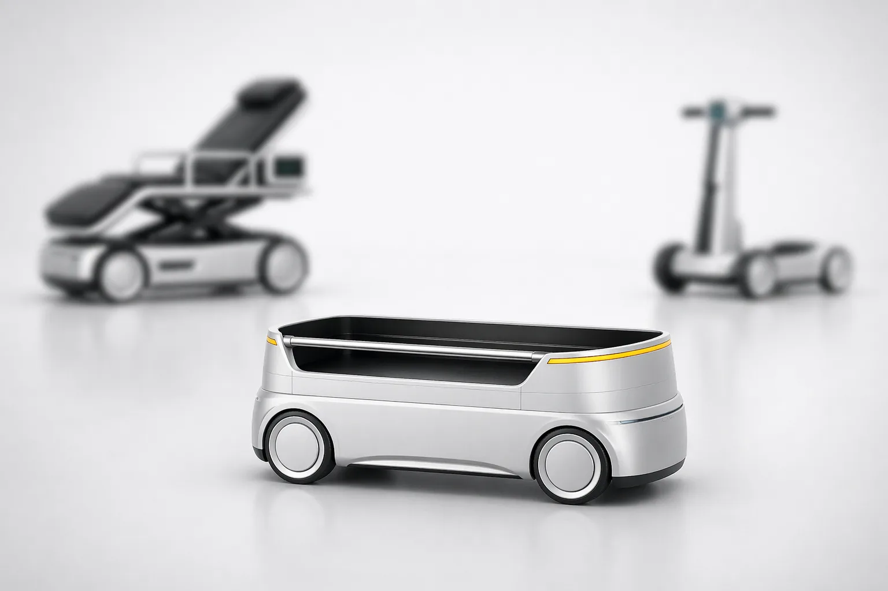
공원·캠퍼스 같은 제한된 공공 공간을 위한 모듈형 모빌리티 서비스를 제안했습니다.
2026년 디자인산업기술개발사업에 제안한 정부 R&D 과제입니다.
제한된 구역 안에서 수송, 관람, 짐 운반 등 여러 공공 서비스를 수행할 수 있는
소형 전동 모빌리티 플랫폼과 서비스 경험을 설계했습니다.
주관기관(프리텍)의 디자이너로 RFP 분석부터 콘셉트 방향 설정, 참여기관 간 UX 연결과 검수,
생성형 AI 기반 시각화, 발표자료 제작까지 제안 전 과정을 맡았습니다.
과제는 제안 단계에서 마무리되었습니다.
기존 모빌리티는 공공 공간에 맞지 않는 부분이 있었습니다.
RFP를 분석하면서 공원·캠퍼스 같은 공공 공간에서 쓰이는 모빌리티의 한계를 경제적·공간적·사회적 세 측면으로 정리했습니다.
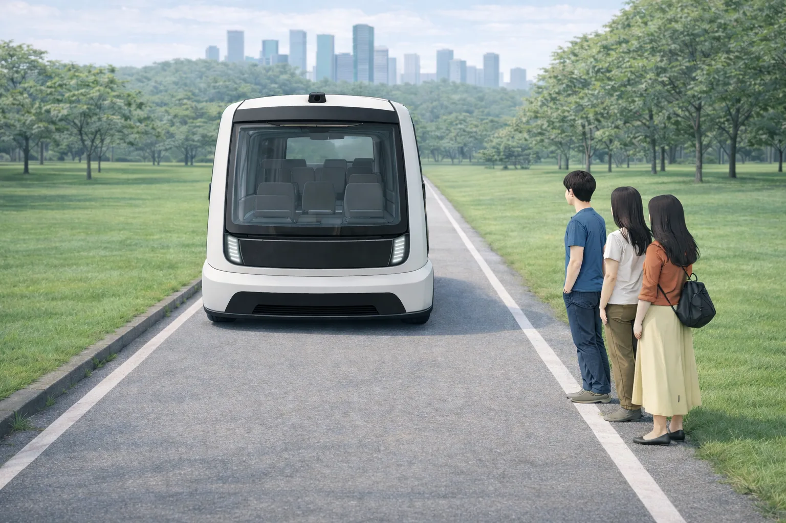
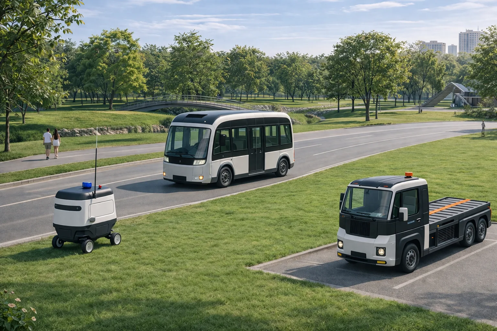
이동 수단이 아니라, 공간을 옮기는 플랫폼으로 다시 정의했습니다.
초기 아이디어 단계에서는 공항, 골프장, 공원, 리조트 등 장소마다 필요한 기능이 하나씩 더해지면서
상부 모듈 후보가 셔틀, 안내소, 광고판, 방범, 청소, 휠체어 보조 등 열 가지가 넘게 늘어났습니다.
기능 목록은 풍부해졌지만, 무엇을 위한 플랫폼인지는 오히려 흐려지고 있었습니다.
이 시점에 질문을 "무엇을 실어 나를까"에서 "그 자리에 어떤 공간이 잠시 필요할까"로 바꾸자고 제안했습니다.
쉼터, 팝업 매장, 피크닉 테이블, 순찰처럼 흩어져 있던 기능을 공간의 유형으로 묶을 수 있었고,
이 기준이 이후의 제품 구조와 서비스 시나리오를 정하는 축이 되었습니다.
공간을 만들 수 있는 형태를 찾아 플랫폼을 다시 그렸습니다.
하부 플랫폼 여러 대를 이어 붙여 작은 공연 무대처럼 쓰자는 아이디어가 나오면서,
위에 무엇이든 올릴 수 있도록 상판이 넓고 평평한 형태로 방향을 잡았습니다.
이후 회사가 이전에 수행한 로보틱 퍼스널 모빌리티 베이스 플랫폼 디자인(2019)을 출발점으로 삼아,
검증된 구조 위에 공간형 상부 모듈이 얹히는 형태로 발전시켰습니다.
생성형 AI로 상부 모듈과 사용 장면을 빠르게 그려 보며 공간으로 읽히는지, 보행자 사이에서 위압적이지 않은지를 기준으로 방향을 좁혔습니다.
공통 하부 플랫폼 위에 목적에 맞는 상부 모듈을 얹는 구조
자율주행이 가능한 소형 하부 플랫폼 하나에 교체형 상부 모듈을 결합하고, 여러 대가 하나처럼 움직이는 초근접 군집주행을 더했습니다. 각 선택은 앞에서 정의한 문제에 하나씩 대응합니다.
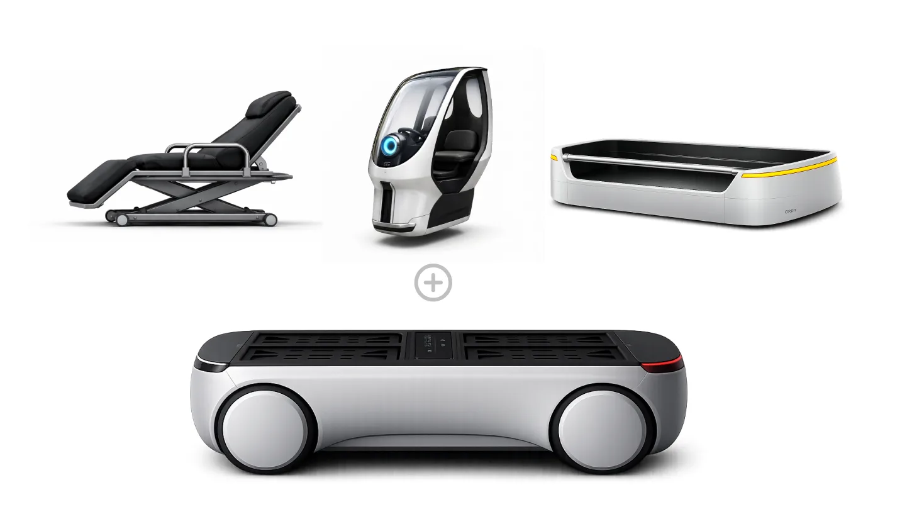
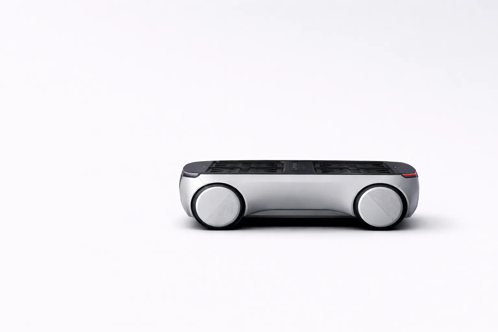
Base Platform
자율주행 기반 소형 폼팩터 공통 하부 플랫폼
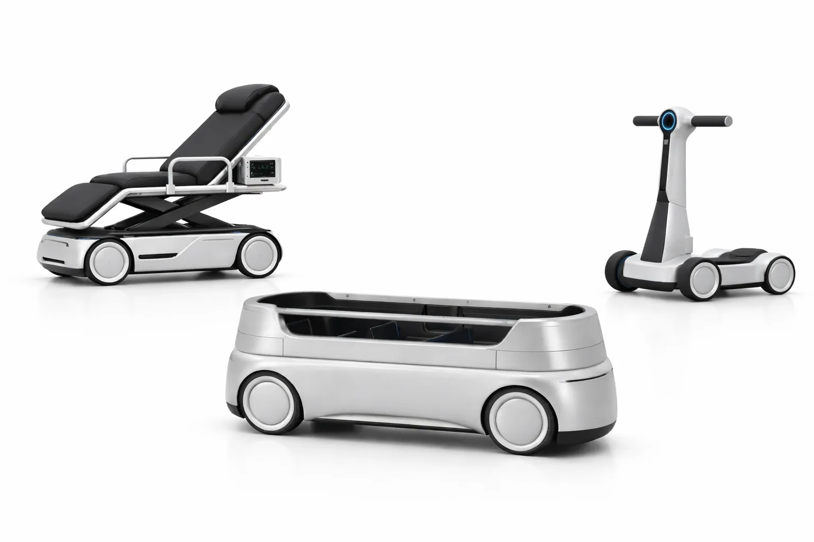
Modular Product Concepts
의료, 물류, 퍼스널 모빌리티로 바뀌는 상부 모듈
이용자와 운영자를 하나의 서비스 흐름으로 연결했습니다.
제품만이 아니라, 모빌리티를 부르고 이용하는 사람과 이를 관리하는 운영자까지 포함한 구조로 서비스를 정의했습니다.
여러 기관이 각자 만든 결과물이 하나의 제안으로 읽히도록 연결하는 역할도 맡았습니다.
제가 키 콘셉트 이미지와 상황·목적별 AI 이미지를 먼저 잡아 공유했는데,
참여기관이 나눠 맡은 활용방안 이미지가 이 콘셉트와 맞지 않아
키 콘셉트를 기준으로 다시 수정해 받는 과정을 거쳐 제안 전체의 시각 언어를 하나로 맞췄습니다.
필요가 생기는 순간부터 결제까지, 하나의 이용 흐름으로 맞췄습니다.
이용자 앱은 참여기관이 설계했고, 저는 이 흐름이 제품 콘셉트와 서비스 시나리오에 맞는지 검수했습니다. 짐을 옮기는 Carry, 직접 타는 Ride처럼 상부 모듈의 종류가 앱의 선택 단계와 그대로 이어지도록, 제품 구조와 앱 화면이 같은 언어를 쓰는지를 중심으로 확인했습니다.
- 필요 발생짐을 옮길지, 직접 탈지
- 허브 검색가까운 허브와 대수
- 모듈 선택 · 예약Carry · Ride 모듈
- 이용남은 시간과 위치 확인
- 자율주행 반납허브로 스스로 복귀
- 결제 · 평가요금 확인과 이용 평가
공원을 첫 거점으로, 다른 공간으로 넓혀 가는 시나리오
공원을 1차 거점으로 피크닉 지원, 환경 모니터링과 야간 순찰, 시즌별 팝업, 쓰레기 수거 시나리오를 정의하고, 골프장·리조트·캠퍼스·아파트 단지·산업단지 등으로 확장하는 단계적 모델을 제시했습니다. 생성형 AI로 각 장면을 시각화해, 아직 존재하지 않는 서비스를 심사위원과 참여기관이 같은 그림으로 이해할 수 있게 했습니다.
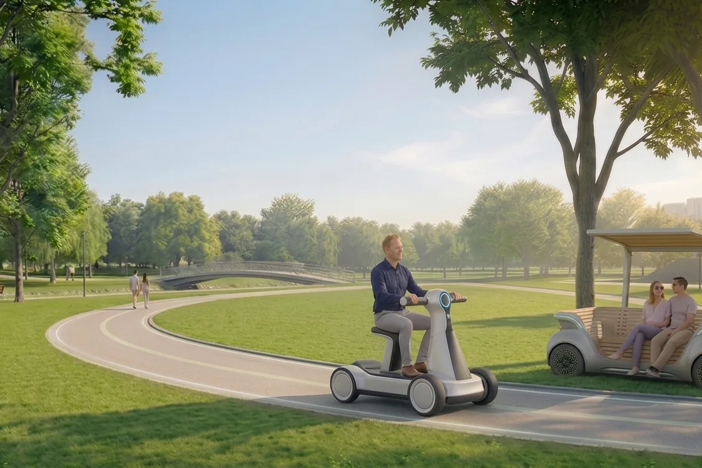
이동 · 휴식
고령자와 보행약자 · 1인 이동 모듈과 벤치형 셔틀로 넓은 공원을 쉬어 가며 이동합니다.
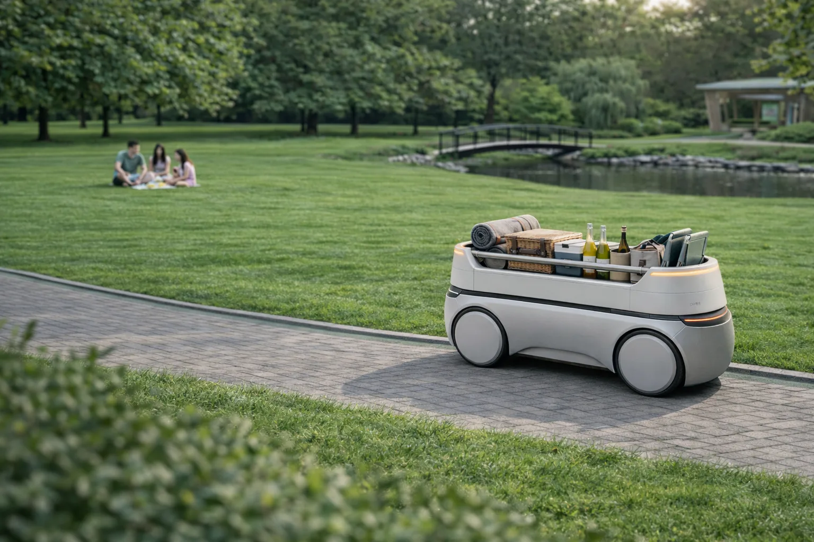
피크닉 지원
가족 단위 방문객 · 짐을 싣고 따라오며 필요한 자리에서 테이블과 쉼터가 됩니다.
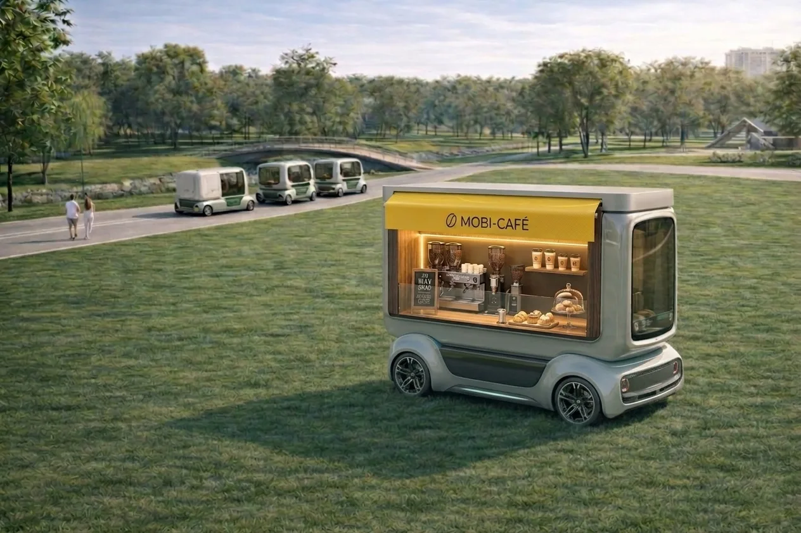
시즌별 팝업
방문객과 운영 사업자 · 행사와 계절에 맞춰 매장을 필요한 곳에 세웁니다.
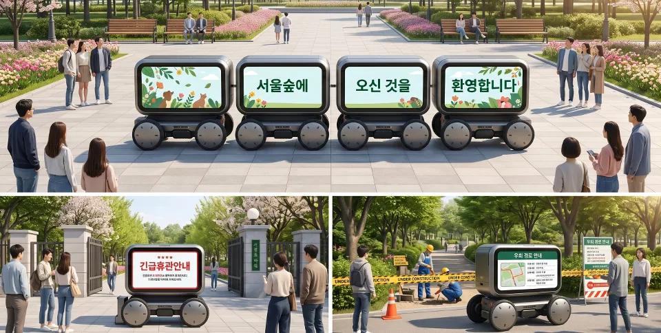
이벤트 · 퍼레이드
축제 방문객 · 여러 대가 줄지어 움직이는 디스플레이가 되고, 평소에는 휴관·공사 안내판으로 쓰입니다.
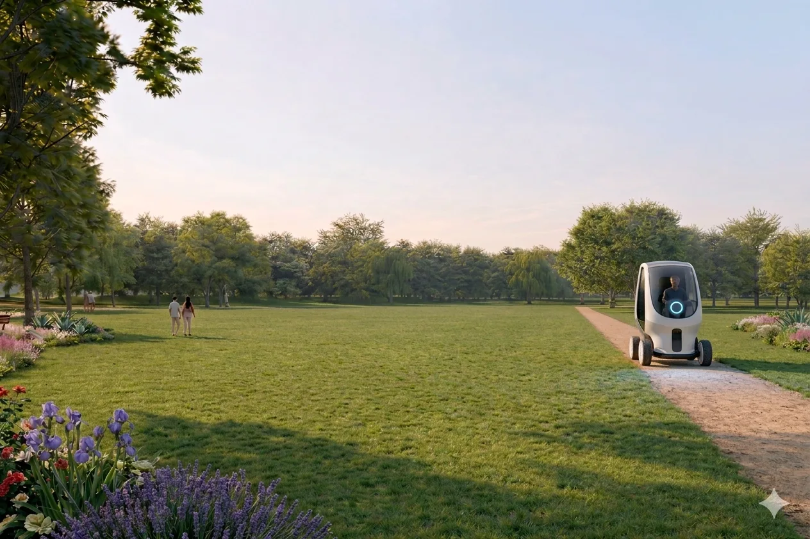
환경 모니터링 · 순찰
공원 관리자 · 사람이 돌기 어려운 시간과 구역을 대신 살핍니다.
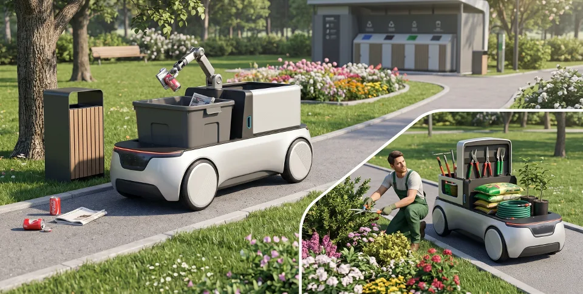
청소 · 유지관리
공원 관리자 · 상부를 쓰레기 수거, 시설 점검, 조경 장비 거치형으로 바꿔 관리 업무를 돕습니다.
장소별 확장
같은 하부 플랫폼에 상부 모듈만 바꿔, 공원에서 검증한 구조를 다른 공간으로 넓히는 모델입니다.
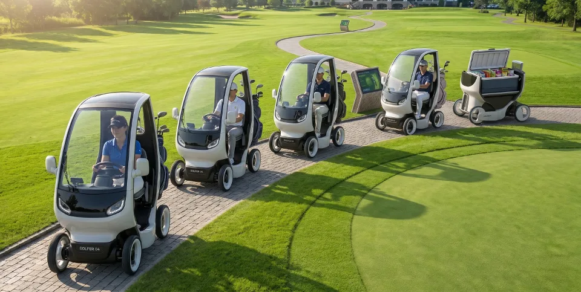
골프장
플레이어 · 개인별 이동과 캐디·장비 운반 카고 모듈
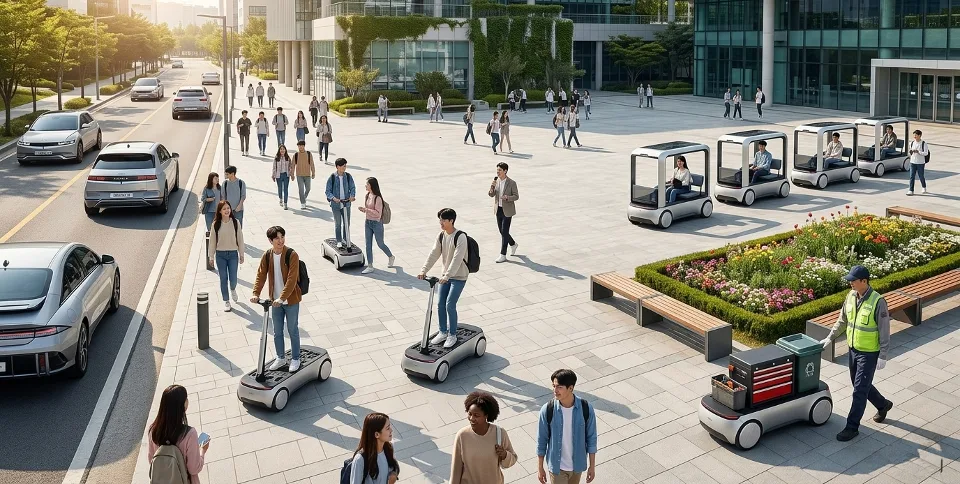
교육시설 · 캠퍼스
학생과 방문객 · 강의동 간 이동, 신입생 투어, 시설 관리 보조
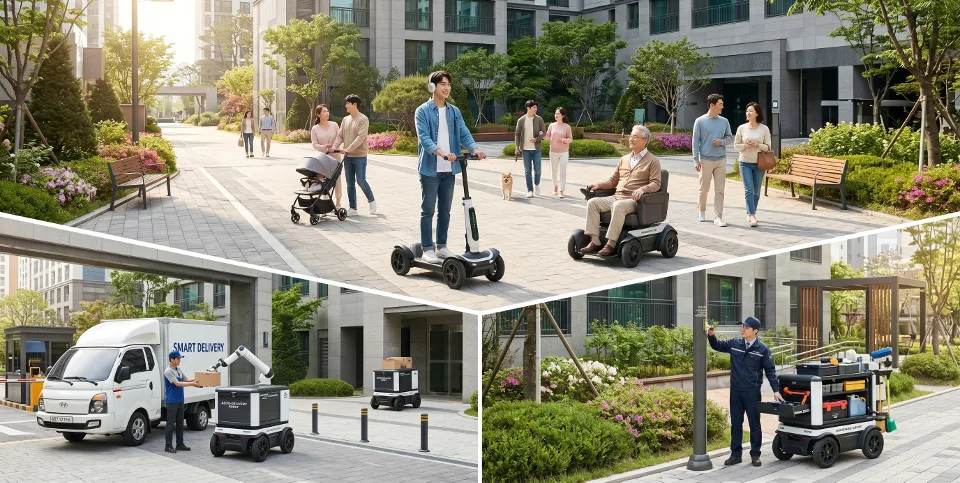
아파트 · 주거단지
고령자와 주민 · 단지 내 생활 이동, 택배 무인 배송, 관리 운영
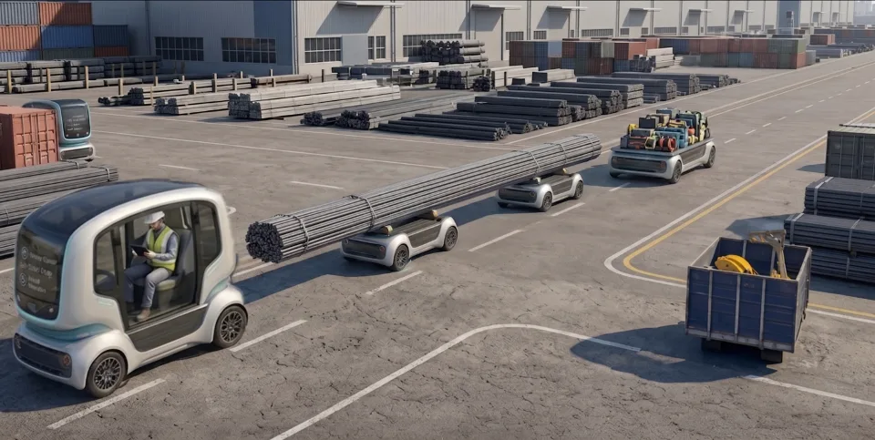
산업 · 물류단지
현장 작업자 · 1인 현장 점검, 군집주행으로 중대형 자재 운반
복잡한 기술과 서비스 구조를 한눈에 읽히는 제안서로 정리했습니다.
제안서의 정보 구조를 설계하고, 생성형 AI로 만든 제품 콘셉트 이미지와 인포그래픽을 더해 기술 중심의 내용을 심사위원이 직관적으로 이해할 수 있도록 발표자료를 디자인했습니다.
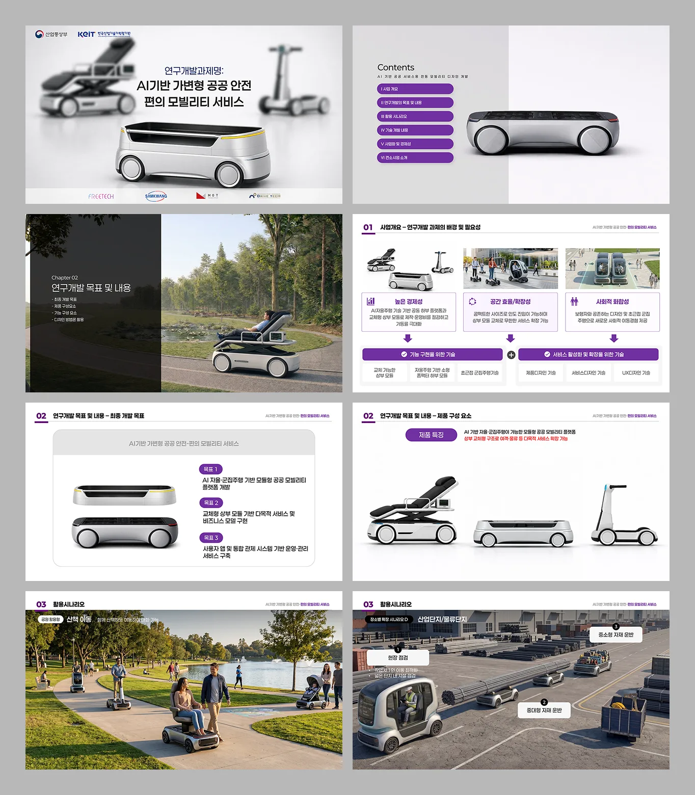
흩어진 의견을 하나의 제안으로 묶는 역할을 맡았습니다.
아직 없는 서비스를 설명 가능한 구조로 만들었습니다.
문제 정의, 콘셉트, 제품 구조, 서비스 구조, 활용 시나리오로 이어지는 제안 체계를 완성했고, B2B·B2G 서비스와 스마트시티 연계까지 확장할 수 있는 방향을 함께 제시했습니다. 과제는 제안 단계에서 선정되지 않았습니다.
좋은 기능 목록보다 하나의 기준이 제안을 움직였습니다.
여러 기관의 아이디어가 쌓일수록 기능은 늘어나지만 방향은 흐려진다는 것을 경험했고,
"공간"이라는 하나의 기준이 생기자 제품, 서비스, 이미지가 같은 이야기를 하기 시작했습니다.
다시 진행한다면 콘셉트를 시각화하는 단계에서 실제 공원 이용자와 관리자를 짧게라도 만나,
시나리오의 우선순위를 사용자 근거로 뒷받침하고 싶습니다.